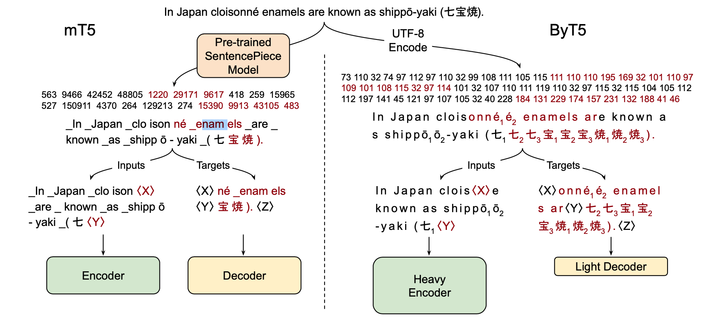
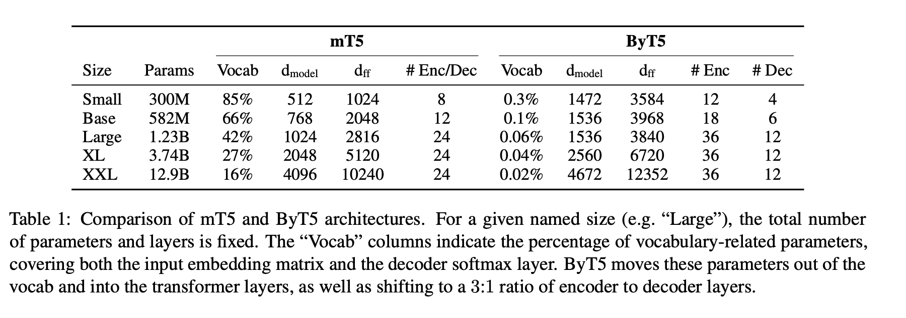
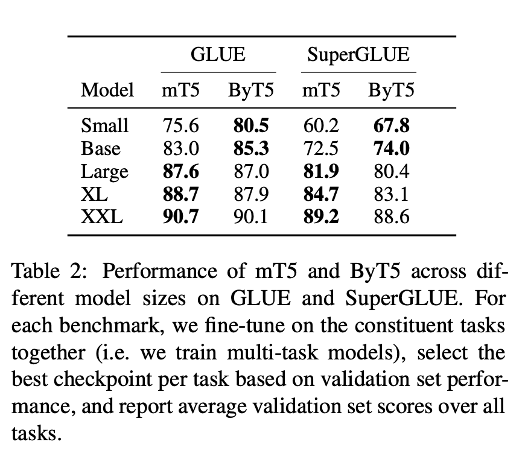
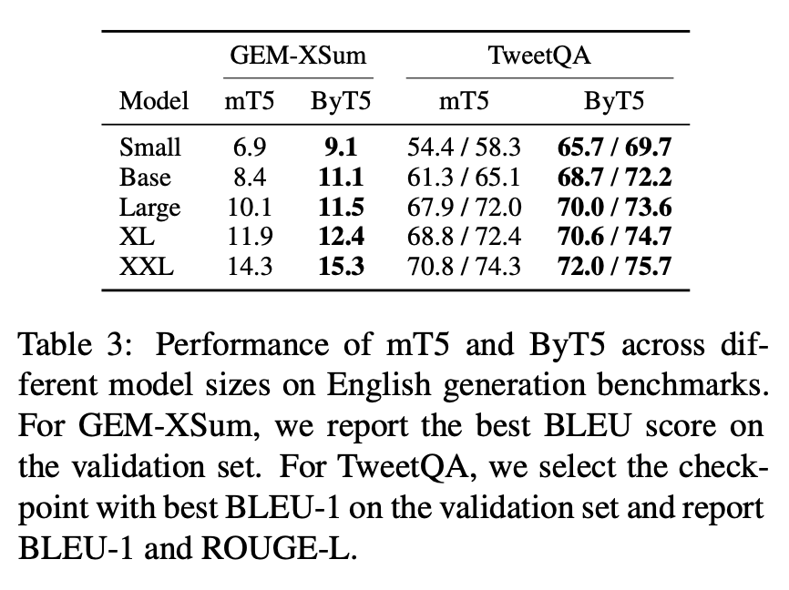

1. Read the title and make an opinion of what’s in the paper (e.g., the area, the task)
Year: 2021
ByT5: Towards a token-free future with pre-trained byte-to-byte models
This has a tantalizing proposal of a byte-level model that does away with the tokenizer.
2. Read the abstract well and form a hypothesis of
- What’s new in the paper?
- Do you have a clear overview about what the paper is all about?
The paper is arguing that there should be serious reconsideration to token-free models because there are many benefits to them:
- Any language out of the box
- robust to noise
- remove complexity
- less sensitive to spelling
In this paper, we show that a standard Transformer architecture can be used with minimal modifications to process byte sequences.
This could prove to be a very valuable find, because although in some cases tokenizers can be simply used, in others they add complexity that ultimately causes issues. It would also be cool to have inline translation if the model is able to ingest per character representations.
3. Look at the images and extract a set of “questions” about what is not clear about their method from the images. Now your job is to answer these questions by reading the paper.
Fig1 shows the differences between using SentencePiece and UTF-8 Encoding.

One thing they show is they adjust the relative sizes of the Encoder and Decoder Transformers. This makes sense after consideration, because the relationship between letters is more complex than the relationship between higher order word pieces.
Another surprising thing to me is they mask in the middle of a word. This may give stronger representations because the model has to predict quite fine outputs.
One question that always has to be asked with Google papers is if this is tractable to the rest of the world. In related work they cite:
© we explore the effect of model scale, training models beyond 10 billion parameters.
4. Read the method aiming to answer your “questions” about the paper. Focus on understanding only the things relevant for the story (i.e., to understand the contribution).
We expect ByT5 will be particular useful for tasks operating on short-to-medium length text sequences (a few sentences or less), as these will incur less slowdown in fine-tuning and inference.
It seems they are OK with working with shorter sequences. This is reasonable, because there are many tasks that require working with only shorter sequences. Thus it seems reasonable that tokenizers will be around for a while until we are able to have much more compute, and find architectures that model long term dependencies efficiently.
The model can be understood by a few key points:
- The input is simply UTF-8 Encoded Bytes
- The depth of the encoder is decoupled from the decoder.
- Pretrained on a masked span, not single token masking.
Table1 has a interesting insight that for multi-lingual models, the vocab embedding contributes a significant portion to the overall model size if the text is tokenized with pieces of words. However, on the flip side, using just a byte level representation, the embedding is much smaller.

5. Read the experiments to convince you that the show results are caused by their claim. Be aware that the experiments highlighted are the best scenarios and are fully hyper-parameter tuned.
They show that ByT5 is mostly competitive with a Tokenized variant, but excels in smaller model sizes.

Also performs well on Text Generation Tasks:

Not all results are in favor of the ByT5. There are compute and latency concerns that make it slower than a tokenized version. ByT5 is anywhere from 1.1X to 1.25X more training data than mT5 and requires from 1.1X to 7.0X more time in inference mode.
6. Make sure you answered all your questions. Did the authors convince you that their story has the effect that they claim?
I think this is a great work at moving towards a future with tokenizers (as the put it). The advantages of character level representations is very appealing, and I hope the future lends more improvement on attention complexity and speed so character level models can be used easily.
I wonder if this model could benefit from using an ELECTRA pretraining objective? It will probably not improve performance, but make increase training efficiency.